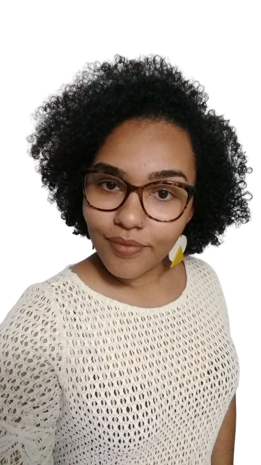

Emanuelly Vieira
Desenvolvedora Front-End
Uma Desenvolvedora focada em escrever códigos limpos e eficientes.
Sou confiante, naturalmente curiosa e sempre trabalhando para melhorar minhas habilidades, um problema por vez.
Sou confiante, naturalmente curiosa e sempre trabalhando para melhorar minhas habilidades, um problema por vez.
| Linguagens que utilizo: |
|---|
| JavaScript |
| HTML |
| CSS |
| Git |
| GitHub |